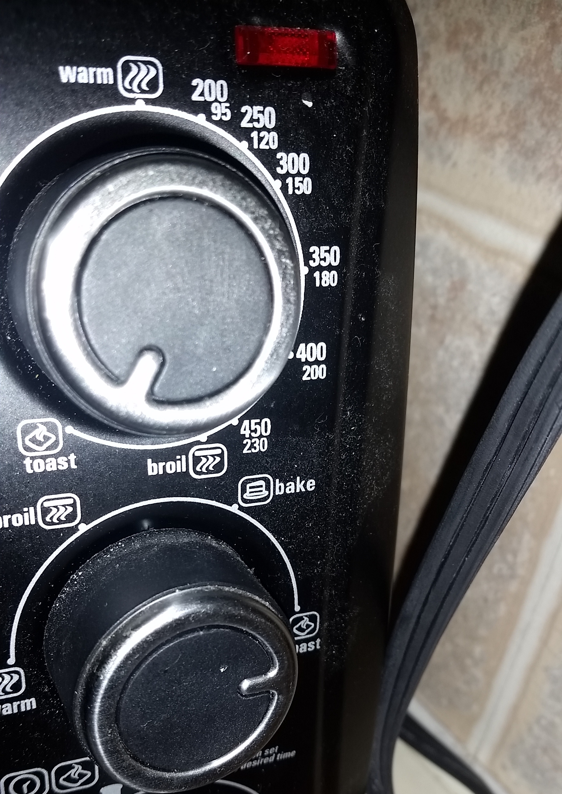

To toast, user would open the door and place bread/bagel inside. Then, they would set the last knob on half or full toast. The first and second knob needs to be on toast.
If a user wants to make frozen pizza or fries, they would first preheat the oven. To preheat it, they would set the temperature and change the middle knob to bake. To start it, they would have to go pass 10 and then go back and put it in between start and 10 thinking it would be 5 minutes. Then, the user would put pizza in and set the time again to bake.